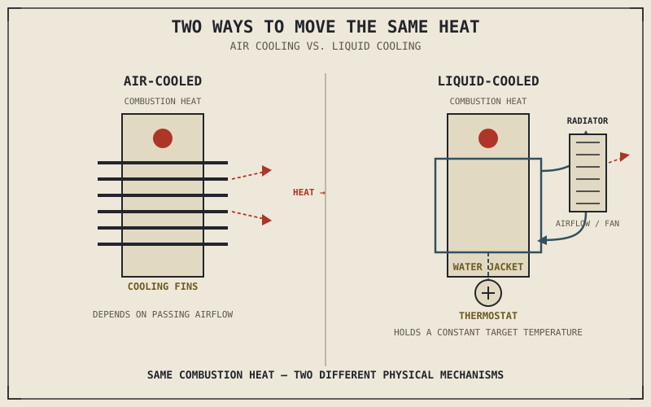

Only a fraction of the energy released inside a combustion chamber ever becomes the useful rotation Chapter 2.1 named as an engine's whole purpose — a full accounting of exactly where the rest goes is Chapter 2.19's job, but the short version is that a very large share of it leaves as raw heat, and that heat has to go somewhere. Left unmanaged, it doesn't just make the engine hot to the touch. It weakens metal, distorts the precise clearances Chapter 2.5 described between piston and cylinder, and pushes the mixture toward exactly the knock conditions Chapter 2.4 warned about. The cooling system exists purely to prevent that outcome.
Chapter 2.1 named cooling as support infrastructure early in this part, protecting the core combustion-to-rotation conversion rather than contributing to it directly. This chapter finally makes good on that promise, covering the two dominant approaches motorcycles use to move heat away from the engine before it can do damage.
Why Heat Is a Genuine Threat, Not Just a Nuisance
Metal loses strength as it gets hotter, and the tight clearances Chapter 2.5 described between the piston and cylinder wall are calculated for a specific operating temperature — run meaningfully hotter than that, and the piston can expand enough to bind against the cylinder wall it was designed to slide freely inside. Heat also directly feeds the knock conditions Chapter 2.4 and Chapter 2.9 both identified: hotter intake air and hotter cylinder walls both push the end-gas closer to igniting on its own before the flame front arrives, meaning an overheating engine isn't just running poorly, it's actively working against the careful ignition timing and compression ratio decisions covered earlier in this part.
None of this is a design flaw to be engineered away entirely — it's the direct, unavoidable cost of extracting useful work from combustion at all, and it's exactly why an engine needs a dedicated system whose only job is managing it.
Air Cooling: Simple, Passive, and Condition-Dependent
The simplest approach is air cooling: metal fins, cast directly into the cylinder and cylinder head, dramatically increase the surface area exposed to passing air, letting heat conduct out of the engine and into that airflow as the bike moves. It requires no radiator, no coolant, no water pump, and no hoses — fewer components that can leak, fail, or need servicing, and meaningfully less weight than a liquid cooling system carries.
The trade is that air cooling's effectiveness depends directly on how much air is actually moving past those fins and how hot that air already is. A bike idling in slow traffic on a hot day gets far less cooling airflow than the same bike cruising on an open road in mild weather, and an air-cooled engine has no way to compensate for that difference — its cooling capacity simply rises and falls with riding conditions, rather than staying constant. This is why air-cooled engines are generally tuned somewhat conservatively, with lower compression ratios and gentler states of tune than the knock threshold from Chapter 2.9 might otherwise allow, specifically to leave a safety margin for the hot, low-airflow conditions the cooling system can't fully offset.
Liquid Cooling: Complexity in Exchange for Consistency
Liquid cooling circulates a coolant mixture through passages cast directly into the cylinder and head — a water jacket — where it absorbs heat directly from the metal, then carries that heat away to a radiator, where airflow (assisted by an electric fan when the bike is moving too slowly to generate enough airflow on its own) removes it from the coolant before it circulates back to absorb more. A thermostat regulates how much coolant flows through this loop, holding the engine within a narrow target temperature range regardless of whether the bike is idling in traffic or running hard on the highway.
That consistency is the entire point, and it's a direct parallel to the difference Chapter 2.13 drew between carburetors and fuel injection: liquid cooling doesn't necessarily allow a higher peak temperature tolerance than a well-designed air-cooled engine, but it holds the engine near its ideal operating temperature reliably, across a much wider range of real-world conditions, rather than depending on ambient air and road speed the way air cooling does. This consistency is precisely what allows liquid-cooled engines to run the tighter tolerances and higher compression ratios modern high-performance engines rely on, without needing the conservative safety margin air cooling requires.
Air cooling and liquid cooling aren't a simple-versus-advanced hierarchy. They're a trade between fewer moving parts and consistent thermal control — and how much that consistency is worth depends entirely on how close to the engine's limits the rest of its tuning is pushing.

An air-cooled cylinder with fins shown beside a liquid-cooled cylinder with a water jacket, radiator, and thermostat, both managing the same combustion heat through different physical mechanisms.
A Common Misconception, Cleared Up Early
It's tempting to treat air cooling as simply the older, inferior technology and liquid cooling as the unconditionally better replacement — but that misses exactly the trade-off the previous section described. A simpler, more conservatively tuned engine, especially a smaller-displacement commuter engine that never approaches the compression ratios or sustained high loads that demand precise thermal control, can run reliably and durably on air cooling for its entire service life, with fewer components that can fail and less to maintain. Liquid cooling earns its added weight, complexity, and cost specifically for engines being pushed hard enough — high compression, high specific output, sustained high RPM — that the temperature consistency it provides is actually necessary rather than a nice-to-have.
It's also worth noting that many air-cooled engines use a supplementary oil cooler, letting the lubrication system's own oil circulation carry some additional heat away as a secondary function — a hybrid approach that leads directly into the next chapter's subject.
Where This Leads
Heat management is only one of the two protective systems an engine needs to survive its own operation. The other is friction management — keeping metal parts moving against each other thousands of times a minute without destroying themselves in the process, which Chapter 2.5 already flagged as a real concern for piston side-thrust and bearing loads. Chapter 2.16 turns to lubrication and oil, the system responsible for exactly that.
Key Concepts to Remember
- Excess heat threatens an engine in two direct ways: it weakens metal and disrupts the precise clearances Chapter 2.5 described, and it feeds the knock conditions Chapter 2.4 and Chapter 2.9 identified.
- Air cooling relies on fins and passing airflow to dissipate heat, requiring fewer components but leaving cooling capacity dependent on riding speed and ambient temperature.
- Liquid cooling circulates coolant through a water jacket to a radiator, using a thermostat to hold the engine within a consistent temperature range regardless of conditions.
- Liquid cooling's real advantage, much like fuel injection's over carburetion, is consistency across changing conditions rather than a fundamentally higher temperature ceiling.
- Neither cooling approach is unconditionally superior — air cooling suits simpler, conservatively tuned engines, while liquid cooling earns its complexity specifically on engines tuned aggressively enough to need precise thermal control.
Cross-References
| ← Ch. 2.1 | First named cooling as support infrastructure protecting the core combustion-to-rotation conversion; this chapter explains exactly how that protection works. |
| ← Ch. 2.4 | Identified heat as a direct contributor to knock; this chapter shows how cooling system choice sets the safety margin available against that threat. |
| ← Ch. 2.5 | Described the piston-to-cylinder clearances that excess heat can disrupt through thermal expansion. |
| ← Ch. 2.13 | Drew the same consistency-versus-simplicity distinction between carburetors and fuel injection that this chapter draws between air and liquid cooling. |
| → Ch. 2.16 | Lubrication and oil, the other major protective system managing friction rather than heat, and one that can supplement cooling directly through an oil cooler. |